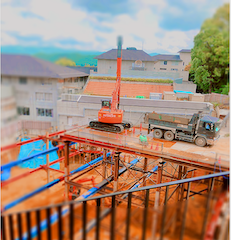

Photoshop
<ミニチュア風写真の作り方 >
Before
After

Method
上メニューの「イメージ」→「色調補正」から「明るさ・コントラスト」を選択し、
プレビューを見ながら明るさを調整してメリハリをつけ、色の彩度を上げてカラフルにする。
「色彩・彩度」のレイヤーではなく、元画像のレイヤーに戻した上で
「イメージ」から「色調補正」→「トーンカーブ」を選択し、調整する。
「フィルター」から「ぼかしギャラリー」→「チルトシフト」
もしくは「虹彩ぼかし」などを使い、中心にするもの以外